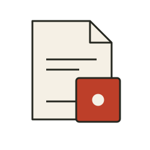
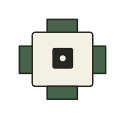

Sistema Brío
Reglas y material de juego.
Ver la propuesta ↗Un proyecto de Brío RolEstudio de identidad / Propuesta 01
Brío Rol
La fuerza del logotipo de Brío, una composición editorial y controles claros. Una web de autor que puede convivir con herramientas de juego.

Logotipo principal · una tinta

Se conserva. El dibujo original, las letras compactas y el dado en la «i».

Se extrae. El dado de un punto identifica el origen común en espacios pequeños.
SISTEMA
SALA / RUIDO
Se extiende. Titulares condensados y una firma discreta: «Un proyecto de Brío Rol».
Barlow Condensed / Bold
De la idea
a la partida.
Portadas, nombres de proyectos y títulos. La anchura compacta recoge el carácter del logo.
IBM Plex Sans / Regular y Medium
Reglas que puedes consultar.
Herramientas que puedes usar.
Texto, navegación y controles. Acentos, números y etiquetas legibles. Las aplicaciones usan principalmente esta familia.
ÁÉÍÓÚ ñ ¿? 0123456789
#F3EFE4#252720#B43824#E1E5D9#E9D9AEEl rojo señala acciones y énfasis. Salvia y ocre acompañan ilustraciones y materiales. La jerarquía se construye con escala, alineación y filetes. Las superficies son planas y los estados llevan etiquetas: el color nunca trabaja solo.

Reglas y material de juego.
Ver la propuesta ↗Un proyecto de Brío Rol
El lugar de la partida compartida.
Un proyecto de Brío Rol
Ambiente sonoro para la partida.
Un proyecto de Brío Rol«Sala» es una propuesta de nombre para la aplicación que veníamos llamando «Juega». La jerarquía propuesta permite que una futura herramienta de dados tenga identidad y dirección propias, además de usarse dentro de Sala.
Estudio de controles para Ruido · no reproduce audio
Biblioteca
La web de presentación puede usar titulares grandes y espacio. Una herramienta necesita filas compactas, etiquetas legibles y controles estables. Comparten tipografías, filetes y símbolo; la interfaz oscura utiliza un acento más claro para mantener el contraste.
«Cosas que hago para jugar a rol.»
Primera persona en la web de autor. Descripciones concretas en los proyectos. Acciones inequívocas en las herramientas: «Crear sala», «Lanzar dados», «Parar todo».
Ver los textos en la landing